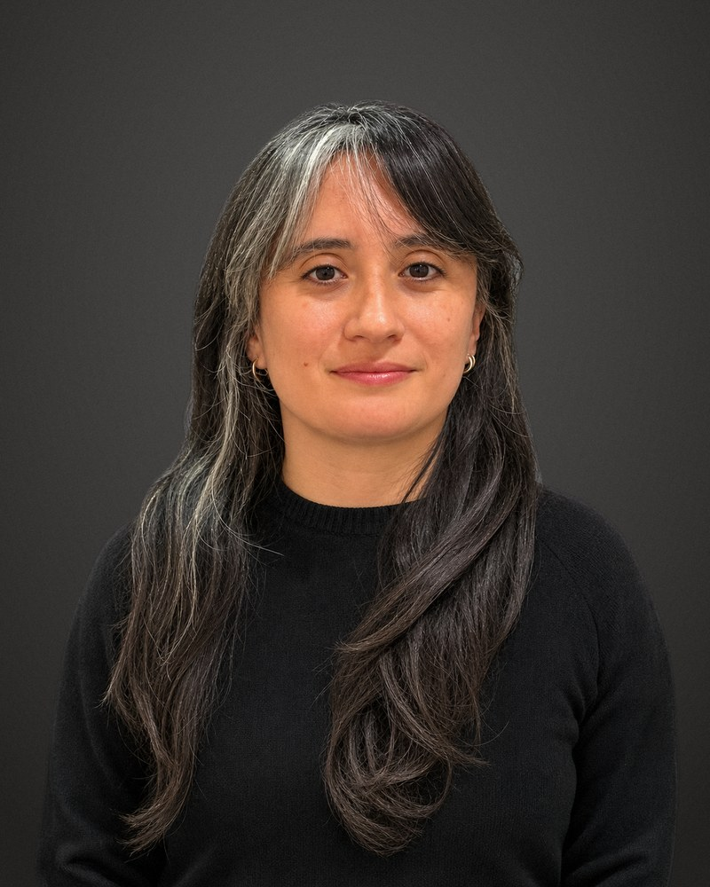

I’m a postdoctoral researcher at Vrije Universiteit Brussel, where I lead the qualitative research of the ERC project INEQNEWS on digital news inequalities, and an assistant professor at Universidad de Concepción, Chile. My work asks how people engage with news, why they stay loyal to it or turn away from it, what earns their trust, and how social and digital inequalities shape who feels served by journalism.
I work mainly with qualitative and trace-based interview methods, in Latin America and Europe, and I’m an adjunct researcher at the Millennium Nucleus MEPOP. I received my PhD from Vrije Universiteit Amsterdam in 2023, and my research has appeared in Journalism Studies, Digital Journalism, Journalism and Journalism & Mass Communication Quarterly.